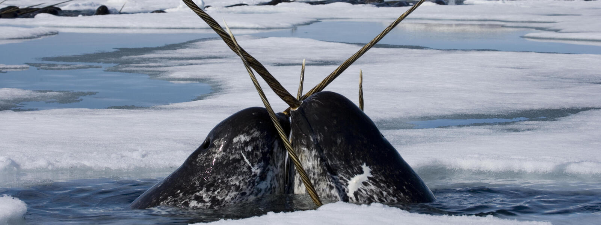

El narval parece una combinación entre una ballena y un unicornio gracias al largo colmillo en espiral que sobresale de su cabeza. Los machos suelen tener un colmillo, pero algunos incluso pueden tener dos. El colmillo, que puede llegar a medir hasta 10 pies (3 m), es en realidad un diente agrandado. Investigaciones en curso realizadas por colaboradores de WWF indican que el colmillo posee capacidad sensorial y tiene hasta 10 millones de terminaciones nerviosas en su interior. El colmillo también podría influir en la forma en que los machos ejercen su dominio.
Los narvales pasan su vida en el ártico de Canadá, Groenlandia, Noruega y Rusia. La mayoría de los narvales del mundo invernan hasta cinco meses bajo el hielo marino en la zona de la bahía de Baffin-estrecho de Davis (entre Canadá y el oeste de Groenlandia). Las grietas en el hielo les permiten respirar cuando lo necesitan, especialmente después de inmersiones, que pueden alcanzar hasta 1.5 millas (2.4 km) de profundidad. Se alimentan principalmente de fletán negro, junto con otros peces, calamares y camarones.
Amenazas
Cambio climático: Miles de años de evolución han preparado a especies árticas como el oso polar, la morsa y el narval para la vida en el hielo marino y sus alrededores. Debido al cambio climático, esta capa de hielo ha estado cambiando rápidamente, tanto en extensión como en grosor, y se ha reducido a una velocidad tal, que estas especies no se han adaptado. La vida entera de un narval está ligada al hielo marino, tanto como lugar de alimentación como de refugio. Las ballenas, que nadan lentamente, dependen del hielo marino para esconderse de depredadores como las orcas.
Explotación de petróleo y gas: Los buques que apoyan la explotación de petróleo y gas implican un aumento del transporte marítimo en zonas sensibles. Este aumento implica más ruido que puede interrumpir las comunicaciones de muchas especies marinas del Ártico y aumenta el potencial de colisiones con mamíferos marinos, especialmente ballenas. También conlleva más contaminación y una mayor posibilidad de derrames de petróleo o combustible.
Contacto 3125949500